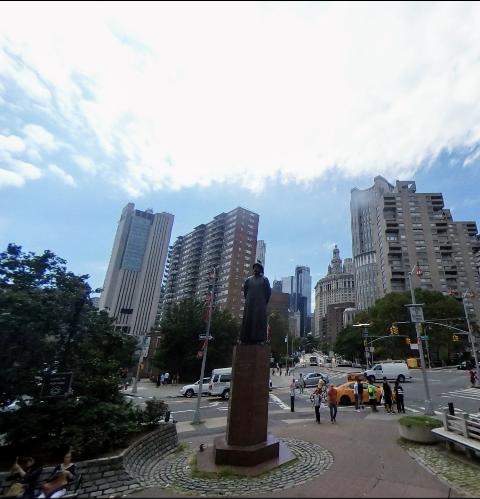

The Patna Opium Factory (India): Two Perspectives
British View: W.S. Sherwill, 1850

Stacking room. Emphasizes scale: towering architecture, roof-to-ceiling stacks, workers appear small.
Indian View: Shiva Lal, 1857

Weighing opium. Humanizes the labor: shows individual workers, their faces and tasks.
Industrial-scale drug production: The East India Company's Patna factory employed 1,000 workers in 40°C heat, producing ~13 million pounds of opium annually. Opium was rolled into 6-pound balls, packed 40 per chest, shipped to China.
Shiva Lal painted 19 images for Dr. D.R. Lyall (EIC opium supervisor). Lyall was killed in the 1857 Indian Mutiny; the project was abandoned. Source: MIT Visualizing Cultures
The Trade Imbalance
Tea Exports to Britain (lbs)
The problem: By 1800, Britain was paying £3.6 million in silver per year to China for tea. The silver drain threatened the British economy.
Opium Imports to China (chests)
The "solution": Britain flooded China with opium grown in India. 1 chest ≈ 140 lbs.
Source: Spence, Chinese Roundabout (1992)
1839: Commissioner Lin Zexu destroyed 20,000 chests of opium at Canton. Britain declared war. China lost. The Treaty of Nanjing (1842) forced open five treaty ports and ceded Hong Kong.
The Technological Gap: HMS Nemesis

The Nemesis destroying Chinese war junks at Chuenpi, January 7, 1841. Source: MIT Visualizing Cultures / National Maritime Museum
The "Devil Ship": The Nemesis was the first iron warship ever built. Owned by the East India Company, it arrived in China in November 1840. Steam-powered, shallow draft (could navigate rivers), armed with pivot guns — it was invincible against Chinese junks and shore batteries.
By 1842, British forces included multiple iron steamers and ~12,000 troops. China's military, focused on internal control, had no answer to industrial-age naval warfare.
Lin Zexu's Letter to Queen Victoria
The Letter That Was Never Delivered
Commissioner Lin entrusted the second of his letters to Queen Victoria to the captain of the East Indiaman Thomas Coutts, who in October 1839 had defied British authorities by running the British blockade at Canton and signing a bond with Lin agreeing he would not transport opium. The owners of the Thomas Coutts were Quakers opposed to the drug trade.
Upon reaching London in January, the captain turned the letter over to one of the co-owners, who in turn attempted to deliver it to Foreign Secretary Palmerston. When the Foreign Office refused to accept the letter, it was made available to the Canton-based missionary publication Chinese Repository, which printed it in February 1840.

"Portrait of a Mandarin" — Frontispiece from The War in China (D. McPherson, 1843). Source: Wellcome Collection
Lin's Moral Argument: "Let us suppose that foreigners came from another country, and brought opium into England, and seduced the people of your country to smoke it, would not you, the sovereign of the said country, look upon such a procedure with anger?" — Britain had the better weapons; Lin had the better argument. The Foreign Office's refusal to even accept the letter shows which mattered more.
The Treaty of Nanjing (August 29, 1842)

"The Signing and Sealing of the Treaty of Nanking in the State Cabin of H.M.S. Cornwallis, 29th August, 1842" (detail). Painted by Capt. John Platt.
The First "Unequal Treaty": China ceded Hong Kong, opened five treaty ports (Canton, Xiamen, Fuzhou, Ningbo, Shanghai), paid $21 million in reparations, and granted extraterritoriality to British subjects. Britain had no obligations in return. This began China's "Century of Humiliation."
Lin Zexu's Legacy: From Disgrace to Hero
Then: Scapegoat
After China's defeat, the Daoguang Emperor blamed Lin Zexu for provoking the war. Lin was stripped of his rank and exiled to Xinjiang (China's remote northwest frontier) in 1841. He spent years in disgrace before being rehabilitated late in life. He died in 1850.
Now: National Hero
Today, Lin Zexu is celebrated in China as a patriotic hero who stood up to foreign imperialism. His statue stands in Chatham Square, New York City's Chinatown — inscribed "Pioneer in the War Against Drugs." The irony: he's honored in America for fighting British drug trafficking.

Lin Zexu statue at Chatham Square, Chinatown, New York City. Inscribed: "Pioneer in the War Against Drugs."
Contemporary Connection: Today, the fentanyl crisis reverses the roles — China is now accused of enabling drug flows to North America. How would Americans respond to a Chinese official's moral lecture about poison flowing into their country?